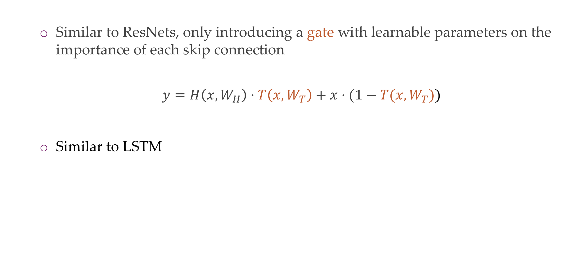
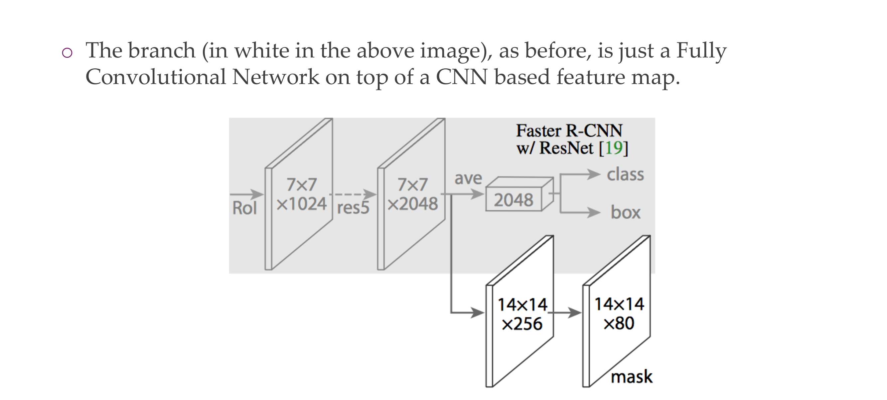

1 Lecture overview
2 Understanding deep embeddings

3 The deep layers will gradually learn more abstract features.
The things that are not important are guided by SGD
4 This deep, lower dimensional space learns meaningful structures

Call lower dimension manifold. RGB does not have meaningfull transformations
5 What do the different layers in a deep neural netwok learn

6 What do the different layers in a deep neural network learn

7 How do these layers correspond to “semantics”: numerical evaluation

We Pooled them because the features are too big, we get smaller size inputs
7.1 1. 2D Pooling (e.g., Max Pooling) in CNNs:
Consider an input feature map with dimensions [batch_size, channels, height, width]:
[32, 64, 32, 32]- Max Pooling (2x2):
- Apply a 2x2 max pooling operation, reducing height and width by half.
- Resulting feature map:
[32, 64, 16, 16].
Input: [32, 64, 32, 32]
Max Pooling: [32, 64, 16, 16]- This is AlexNet, Source
Remember: the num of kernels for Convolution determines the new depth-dimension.
What if the deepth was 3 channels, then we apply convolution to the 3 channels and then we summed them over. That is using only one kernel, now if we have 6 kernels we would sum the 3 channels, 6 times, but at the end we end up with a new deepth of 6. Check this
Flattening Operation: multiply all its dimensions to form a 1D vector
- Output:
[batch_size, num_filters * reduced_height * reduced_width]
Training a linear layer on top of a pretrained model is a common practice in transfer learning. Here’s an example using a pretrained convolutional neural network (CNN) as a feature extractor, and then adding a linear layer on top for a specific task, such as image classification.
Let’s assume we have a pretrained ResNet18 model, and we want to use it for a new classification task. The final classification layer of ResNet18 is typically a linear layer. We will replace this final layer with our custom linear layer.
import torch
import torch.nn as nn
import torchvision.models as models
# Load pretrained ResNet18
pretrained_resnet18 = models.resnet18(pretrained=True)
# Freeze all layers except the final classification layer
for param in pretrained_resnet18.parameters():
param.requires_grad = False
# Modify the final classification layer
in_features = pretrained_resnet18.fc.in_features
num_classes = 10 # Assuming 10 classes for the new task
custom_linear_layer = nn.Linear(in_features, num_classes)
pretrained_resnet18.fc = custom_linear_layer
# Now, you can train the modified model for your specific task
# Let's assume you have input data of shape (batch_size, 3, 224, 224) for RGB images
# and corresponding labels of shape (batch_size)
# Example training loop
criterion = nn.CrossEntropyLoss()
optimizer = torch.optim.SGD(pretrained_resnet18.parameters(), lr=0.001)
# Training iterations
for epoch in range(num_epochs):
for inputs, labels in dataloader: # Assume you have a DataLoader for your dataset
optimizer.zero_grad()
outputs = pretrained_resnet18(inputs)
loss = criterion(outputs, labels)
loss.backward()
optimizer.step()
# After training, you can use the modified model for predictionsIn this example: - We load a pretrained ResNet18 model from torchvision. - We freeze all layers of the pretrained model to retain their weights during training. - We replace the final classification layer with our custom linear layer (custom_linear_layer). - We then train the modified model for the new task using a suitable loss function and optimizer.
The dimensions involved depend on your specific input data, but in this case, assuming RGB images of size 224x224, the input shape would be (batch_size, 3, 224, 224), and the linear layer would map to the number of classes in your new task.
8 How does this linear layer looks like?
In the context of a linear layer in neural networks, such as nn.Linear(in_features, num_classes), here’s what the terms mean:
in_features: This is the number of input features (or neurons) coming into the linear layer. In the example I provided earlier with the modified ResNet18 model,in_featuresis the number of features produced by the previous layer, which is the final layer of the feature extractor part of ResNet18. This value depends on the architecture of the pretrained model; you can check it usingpretrained_resnet18.fc.in_features.num_classes: This is the number of output features (or neurons) produced by the linear layer. In the context of a classification task,num_classestypically represents the number of classes you have in your specific classification problem. Each output neuron corresponds to a class, and the model will learn to assign higher values to the correct class during training.
Now, for the number of weights and neurons:
Weights: The linear layer has a weight matrix of size
(out_features, in_features), and a bias vector of size(out_features). In this case, the weight matrix has dimensions(num_classes, in_features).Total number of trainable weights =
(num_classes * in_features) + num_classes.Neurons: The linear layer has
num_classesoutput neurons. Each neuron receives input from allin_featuresneurons in the previous layer.
So, if you have a linear layer defined as nn.Linear(512, 10), for example:
in_featuresis 512.num_classesis 10.
The total number of trainable weights would be (10 * 512) + 10 = 5130, and there would be 10 neurons in the output layer. Each neuron in the output layer is associated with a specific class, and the weights determine how strongly each input feature contributes to the prediction for that class.
8.1 Imaging it using Pytorch:
More at source:
9 . Let’s wake up: Summarize the last few minutes to your neighbor. |

10 1x1 Convolution: a computationally cheap method
11 ConvNet Configuration
12 VGG 16

13 Characteristics

14 Why 3x3 filters?
15 Why 3x3 filters?
16 Why 3x3 filters?
17 Why 3x3 filters?

Having 3 filters of 3x3 –> 7 is better because it can learn more non-linearities, more non-trivial functions, having large kernels is expensive, having small kernels but multiple of them is more cheaper
18 Even smaller filters?
When we remove dimensions is because we are getting rid of unimportant features, i.e. background, we also call th 1x1 kernel a bottleneck
19 Overall shapes and sizes when inputting a 224x224 image:
Vgg architecture
20 Training

They use dropout on the FC layers because they tend to overfit quite easily
21 Feature maps
Some neuros (each item in the row, in total 8) for some the neuron does not fire it because we i.e have the background.
- In the first block we recognize edges
- Later stages. our dimensionality decreases, that’s why we get block structures
22 Filters

Remember: Train only the parameters of the linear classifier while keeping the parameters of the pre-trained model frozen. This is sometimes called “freezing” the pre-trained layers
Because the above its not understandable, so for that we can keep the network frozen and now have an incoming image that is parametrized. Now your input image is torch.nnParameter(3,224,224). And we run gradient descent on this input image.
With that we want to maximize the activation function for a particular filter, so the loss function is the activation negative value of this filter, and you do backpropagation in the incoming image.
So then you get for example for some filter, some edges in one direction. And for higuer level featuers you can see some slighly more complex patterns
23 Class Outputs
Here you see that the neuron will fire up for instance if the incoming image is a rabit, then the first filter will fire up
24 Another Architecture
25 Basic idea

26 Basic idea

27 Inception module

28 Inception module
They are expensive because we have this:
So more parameters to train hence expensive.
Hence we apply 1x1 intermediate convolutions to reduce the dimensionality and have less parameters to train
29 Architecture

30 Architecture: the “Inception” module
The green block is concatenation because spatially they have the same size, so you can stack them together
31 Architecture: the auxiliary classifier idea
Here in this auxilliary classifier, they predict the classes. This gives you gradients even if you havent reach the end of the network
32 Why aux classifiers? Vanishing gradients

We do this becaus otherwhise we end up with the vanishing problem so at one stage you can just use you aux classifier. If you get extremely small gradients then it is very slow to train
33 Architecture
After training you dont need them anymore you can trhow them away (for aux classifier)
34 Inceptions v2, v3, V4, ….
The first picture refers to this two 3x3 then making 5x5, this inclusion of filters make the computations less expensive while introduction non-linearitties to be learn
35 ResNets
36 AlexNet (2012)

37 Evolution

38 Title

39 Evolution
40 Evolution

41 Why care about architectures… here’s why:
They become more accurate because the parameters did not increase that much despite having more layers. This is because we interchange the 5x5 filter in convolution by i.e two 3x3 kernels
42 Some facts about ResNets

43 Hypothesis
If your problem only required, the depth of a CNNA, then B in terms of performance would be the same
44 Hypothesis
45 Hypothesis

46 However, when trained the deeper network has higher training error

Here th problem is that we say that the deeper CNN would yield the same ouput as the smaller architecture but in this case when looking at the error the larger one has more error. So what happen in next slide. It may be with regards to optimization because in theory it should be able to lear in because of more flexibility by the NN
47 Testing the hypothesis
Here the optimization is the problem, it is more harder to optimize this landscape
48 Observation

Because you have many layers the training layers get lost, and model does not learn anymore
49 The “residual idea”, intuitively
Here the intuition is that technically it would be possible, so why not we make it easy for the NN to learn this easy relationship, here is the residual idea.
So instead of learning how you map things instead lets learn how you change it. So a difference that we need to learn not the mapping. So then here we are making the NN to explicitly model the difference in mappings
50 The residual block

With these new connection it make the vanishing problem not to occurr because the input can pass to the next layers
So here if the dimensions do not matche we need to make them amtch because we are just saying x=f(x) so f() here should make things equal, because we said that they were the identity functions
Advantages and Disadvantages of Residual networks here:
51 No degradation anymore
52 ResNet breaks records

53 ResNet variants & ResNeXt
54 Some observations
Residual connections or identity shortcuts
Batch Normalization (BatchNorm) is a technique used in neural networks to normalize the inputs of a layer, typically by subtracting the mean and dividing by the standard deviation of the batch. BatchNorm has several benefits and is commonly used for the following reasons:
- Stabilizing and Accelerating Training:
- BatchNorm can help stabilize and accelerate the training of deep neural networks. It mitigates issues related to internal covariate shift, which is the change in the distribution of network activations due to parameter updates during training. By normalizing the inputs, it helps maintain a more consistent distribution of activations throughout the training process.
- Regularization:
- BatchNorm acts as a form of regularization by introducing noise during training. It adds a small amount of noise to the hidden unit activations, which has a similar effect to dropout, helping prevent overfitting.
- Reducing Sensitivity to Initialization:
- BatchNorm reduces the sensitivity of neural networks to weight initialization. It allows the use of higher learning rates and makes the training less dependent on the choice of initial weights.
- Addressing Gradient Problems:
- During training, neural networks often encounter problems related to vanishing or exploding gradients. BatchNorm helps mitigate these issues by normalizing the inputs, which can prevent gradients from becoming too small or too large.
- Enabling Higher Learning Rates:
- BatchNorm enables the use of higher learning rates during training. This can lead to faster convergence and shorter training times.
- Improved Generalization:
- BatchNorm can improve the generalization performance of a model by providing a form of noise during training.
Batch Normalization is a widely used technique that improves the stability, speed, and generalization of neural network training. It addresses various challenges associated with training deep networks, including gradient-related problems, and has become a standard component in many modern neural network architectures.
55 Quiz
On the right you see the..- False, batch + ReLu makes half of the value zero
- False, it is okay to write it like that
- Say conv2 has a dimensionality of 256, but the input has dimension of 128, then downsample function will donwsample to 128 to match the input dimensions. So that means the residual operations have always need to have the same channel
Example in residuals you can do concat or add
- concat: you end up with
- Tensor A: Shape (ch, 3, 4)
- Tensor B: Shape (ch, 2, 4)
- Out: Shape (ch, 2, 4)
- Add, both tensors needs to have same shape
- Tensor A: Shape (ch, 6, 4)
- Tensor B: Shape (ch, 6, 4)
- Out: Shape (ch, 6, 4)
So here they ar saying that to do residual connections the channels needs to be of same dimensions thus why we need the donwsample function. Zero padding is only used for spatial dimensions
56 HighwayNet (slightly earlier than ResNets in 2015)

57 DenseNet

58 DenseNet
Because of the skip connections it also has benefits for optimization
59 DenseNet
60 DenseNets
61 Trend has not stopped with DenseNet
62 MobileNets: Depthwise convolutions for high latency

Deepthwise it only looks at one ch, so the filer is kxkx1
Pointwise then mixes channels
A 1x1 convolutional layer is often used for channel-wise transformations because it operates independently on each pixel across the spatial dimensions but can modify the depth (number of channels) of the input tensor. Here’s an example with tensors to illustrate this concept:
Let’s consider an input tensor with dimensions [batch_size, height, width, channels], where: - batch_size is the number of samples in the batch, - height and width are the spatial dimensions of the feature map, and - channels is the number of channels (or features) at each spatial location.
Now, let’s apply a 1x1 convolutional layer with, say, 3 output channels. The operation is channel-wise, meaning it independently transforms each channel without considering information from other channels. However, it changes the number of channels.
Input Tensor: [batch_size, height, width, channels_in]
1x1 Convolutional Layer (3 output channels):
Output Tensor: [batch_size, height, width, 3]In this example, the 1x1 convolutional layer has transformed the input tensor by performing a linear operation on each channel independently. The resulting tensor now has 3 output channels. This operation is useful for adjusting the channel dimensions while keeping the spatial dimensions intact.
It’s computationally efficient because it involves fewer parameters compared to larger convolutional kernels, and it introduces non-linearity through activation functions applied to each channel independently.
Here’s how the channel-wise transformation works without changing the spatial context. Suppose we have the following input tensor:
Input Tensor: [batch_size, height, width, 5]After applying a 1x1 convolutional layer with 3 output channels, the output tensor would be:
Output Tensor: [batch_size, height, width, 3]Each channel in the output tensor is a linear combination of the corresponding channels in the input tensor, and non-linearity is introduced through activation functions applied independently to each channel.
63 Last Architecture BagNet: Solving ImageNet with tiny 9x9 sized puzzle pieces?

having only 1x1 conv means that the receptive field does not grow
64 ImageNet: mostly textures?

65 How research gets done part 5
Isamu Akasaki: “As Thomas Edison said, ‘Genius is one percent inspiration and 99 perspiration.’ | say this to younger66 Object detection
67 Region-based Convolutional Neural Network (R-CNN)

68 R-CNN
To all the 2k regions boxes we apply CNN, and 2k times the model needs to say which for each of these 2k boses what appears on the image, eg, a car, a plane etc.
69 Improving the Bounding Boxes

70 To summarize

71 R-CNN is really quite slow for a few simple reasons:
72 Some results
73 Fast R-CNN

74 Fast R-CNN Insight 1: Region of Interest Pooling (ROIPool)

75 Region of Interest Pooling (ROIPool)

76 Region of Interest Pooling (ROIPool)
77 Region of Interest Pooling (ROIPool)

78 Region of Interest Pooling (ROIPool)
79 Fast R-CNN Insight 2: Combine All Models into One Network
80 Fast R-CNN: Joint training framework

81 Fast R-CNN: Steps

82 Fast R-CNN: Steps

83 Fast R-CNN: Steps
84 Fast R-CNN: Steps
85 Fast R-CNN: Steps

86 Smart training

87 Some results

88 Fast-RCNN
89 Faster R-CNN - Speeding Up Region Proposal
90 Faster R-CNN
91 Faster R-CNN

92 Faster R-CNN [Girshick2016]

93 Mask R-CNN

94 Mask R-CNN
95 Mask R-CNN

96 RoIAlign - Realigning RoIPool to be More Accurate

97 RoIAlign - Realigning RoIPool to be More Accurate
98 99
99 Becoming fully convolutional

This involves reshaping the weight matrix of the fully connected layer to match the dimensions of a convolutional kernel. Let’s consider an example with tensor dimensions.
Suppose you have a fully connected layer with input size C_in and output size C_out. The weight matrix of this fully connected layer is of shape (C_out, C_in).
Now, to turn it into a 1x1 convolutional layer, you can reshape the weight matrix into the shape (C_out, C_in, 1, 1). The resulting operation is equivalent to a 1x1 convolution with C_in input channels and C_out output channels.
Here’s an example:
Fully Connected Layer:
Input: [batch_size, C_in]
Weights: [C_out, C_in]
Reshaped Weights for 1x1 Convolution:
Weights: [C_out, C_in, 1, 1]
Input Tensor for 1x1 Convolution:
Input: [batch_size, C_in, 1, 1]
Output Tensor for 1x1 Convolution:
Output: [batch_size, C_out, 1, 1]In this example, the reshaped weights effectively create a 1x1 convolutional kernel that operates on each channel independently and produces an output tensor with the specified number of channels.
This transformation allows you to apply convolutional operations even in scenarios where the spatial dimensions are reduced to 1x1. It’s particularly useful in the context of neural network architectures, where convolutional layers are preferred for their ability to capture spatial hierarchies.
What is the input dimensionality of a 1x1 conv? The input dimensionality of a 1x1 convolutional layer is typically three-dimensional. The dimensions correspond to:
- Batch Size (B): The number of samples in a mini-batch.
- Number of Input Channels (C_in): The depth or number of channels in the input feature map.
- Spatial Dimension (H x W): Although a 1x1 convolution operates on a spatial dimension, it often involves 1x1 spatial dimensions (height and width). This is different from traditional convolutions that operate on larger spatial dimensions.
So, the input tensor shape for a 1x1 convolutional layer is often represented as [B, C_in, 1, 1], where B is the batch size, C_in is the number of input channels, and the spatial dimensions are 1x1.
1:48 check in the video
They are not the same the 1x1 conv and the FC layer but they share the same weights and same meaning of the weight
How would a max pooling reduces spatial dimension to 1?
Max pooling reduces spatial dimensions by selecting the maximum value within each pooling window. The pooling window slides over the input data, and for each window, only the maximum value is retained in the pooled output. This process effectively downsamples the input.
Let’s consider an example with a 1D input tensor of size 6 and a max pooling operation with a window size of 2. Here’s the input tensor:
\(\text{Input Tensor: } [1, 3, 5, 2, 8, 6]\)
Applying max pooling with a window size of 2 reduces the spatial dimension by selecting the maximum value in each window:
\(\text{Max Pooled Output: } [3, 5, 8]\)
In this example, the original input had 6 elements, and after max pooling, the output has 3 elements, effectively reducing the spatial dimension. The reduction factor depends on the size of the pooling window and the stride (the step size at which the window moves).
You take the weights of a FC layer and you input them into a 1x1 convolution layer or you just apply the FC layer at every location
100 What is the input dimensionality of a one by 1x1 convolution?
The input dimensionality of a 1x1 convolutional layer is typically three-dimensional. The dimensions correspond to:
- Batch Size (B): The number of samples in a mini-batch.
- Number of Input Channels (C_in): The depth or number of channels in the input feature map.
- Spatial Dimension (H x W): Although a 1x1 convolution operates on a spatial dimension, it often involves 1x1 spatial dimensions (height and width). This is different from traditional convolutions that operate on larger spatial dimensions.
So, the input tensor shape for a 1x1 convolutional layer is often represented as [B, C_in, 1, 1], where B is the batch size, C_in is the number of input channels, and the spatial dimensions are 1x1.
101 What is the input dimensionality of a FC layer?
For a fully connected layer (dense layer) with \(N\) input neurons and \(M\) output neurons, the number of weights is given by:
\(W = N \times M\)
So, for a fully connected layer, the number of weights depends on the number of input and output neurons.
Comparing this with the 1x1 convolutional layer discussed earlier:
- For a 1x1 convolution with \(C_{\text{in}}\) input channels and \(C_{\text{out}}\) output channels, the number of weights is \(C_{\text{in}} \times C_{\text{out}}\).
In general, the number of weights for a fully connected layer is not necessarily the same as that for a 1x1 convolutional layer, as it depends on the specific architecture and dimensions of the layers involved. The key difference lies in how the connections are structured in each type of layer.
102 1x1 conv & FC similarity
You take the weights of a FC layer and you input them into a 1x1 convolution layer or you just apply the FC layer at every location
The statement refers to a conceptual similarity between a fully connected (FC) layer and a 1x1 convolutional layer in terms of their weight organization.
FC Layer: In a traditional fully connected layer, all neurons are connected to every element in the input. If the input has dimensions \(N \times M\), where \(N\) is the batch size and \(M\) is the number of input features, the FC layer has \(M\) weights per neuron.
1x1 Convolutional Layer: A 1x1 convolutional layer, despite being convolutional, can be thought of as a fully connected layer applied at every spatial location independently. It has a kernel size of \(1 \times 1\), meaning it considers only the individual elements at each location. The weights in this case are shared across all spatial locations but applied independently to each location.
So, conceptually, you can take the weights of a FC layer and use them in a 1x1 convolutional layer. This is based on the idea that a 1x1 convolution can capture the essence of a fully connected layer when applied independently across spatial dimensions.
Here’s a simplified example to illustrate:
- FC Layer: \(M\) weights per neuron, where \(M\) is the number of input features.
- 1x1 Conv Layer: \(M\) shared weights applied independently at each spatial location.
This conceptual equivalence is often used in practice, especially in neural network architectures that leverage convolutional layers for spatial hierarchies and fully connected layers for global relationships.
More into 1x1 conv similarity with FC
Convolutional Nature: A 1x1 convolutional layer is a convolutional layer, which means it applies a set of filters (kernels) to the input data. In traditional convolution, these filters scan through local regions of the input, capturing spatial patterns.
Kernel Size: The term “1x1” refers to the size of the filters. A 1x1 convolutional layer uses filters that are 1x1 in size. This means the filter considers only one element at a time during convolution.
Fully Connected Analogy: Despite being a convolutional layer, a 1x1 convolutional layer can be conceptually thought of as a fully connected layer. In a fully connected layer, each neuron is connected to every element in the input. Similarly, a 1x1 convolutional layer can be viewed as having a filter that is as wide and tall as the input, effectively connecting each element in the input to the corresponding neuron in the output.
Spatial Independence: The key distinction is that, unlike a traditional fully connected layer, the weights in a 1x1 convolutional layer are shared across all spatial locations. This means the same set of weights is used at every position in the input. However, these shared weights are applied independently to each location, capturing local patterns.
Therefore, a 1x1 convolutional layer behaves like a fully connected layer applied independently at each spatial location, using shared weights for efficiency. This provides a way to introduce non-linearity and channel-wise transformations without the need for a fully connected layer, especially in the context of convolutional neural networks (CNNs).
103 Upsampling the output

104 “Deconvolution”

105 End-to-end, pixels-to-pixels network
106 End-to-end, pixels-to-pixels network